"Шмонэ-Эсре" - основная еврейская молитва. Другое её название - "Амида", что означает "стояние": её произносят стоя лицом к Израилю, сосредоточившись на произносимых словах и ни на что не отвлекаясь.
Читается она трижды в день - утром (когда читается "Шахарит"), днём ("Минха") и вечером ("Арвит").
Порядок её чтения: после того, как все присутствующие прочитали эту молитву (про себя), они не сходят со своих мест до тех пор, когда хазан начнёт повторение молитвы перед всеми. При повторении молитвы все внимательно слушают хазана, отвечая после каждого благословения "Амен" и произнося каждый раз после слов "Барух Ата А-донай" (Благословен Ты, Г-сподь): "Барух у уварух шемо" (Благословен Он и благословенно Его имя).
(В Минху) Ки Шем А-донай экра, аву годэль лЭлоэну.
Когда воззову к Г-споду, возвеличьте нашего Б-га.
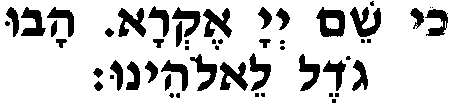
Утром и вечером начинают здесь, а в Минху продолжают: А-донай сефатай тифтах уфи ягид теилатэха.
Г-сподь! Открой мои уста, - и да восхвалит Тебя мой рот.
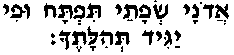
---
Первое благословение: Барух Ата А-донай
Благословен Ты, Г-сподь Элоэну вЭлоэй авотэну Элоэй Авраам Элоэй Йицхак вЭлоэй Яаков,
наш Б-г и Б-г наших отцов, Б-г Авраама, Б-г Ицхака и Б-г Яакова, аЭль агадоль агибор веанора, Эль эльйон гомэль хасадим товим
Б-г великий, могучий и грозный, Всевышний, творящий милости, веконэ аколь везохэр хасдэй авот
владеющий всем, помнящий благие дела отцов умэви гоэль ливнэй венээм лемаан шемо беаава.
с любовью приводящий избавителя к сыновьям их сыновей ради Своего имени.
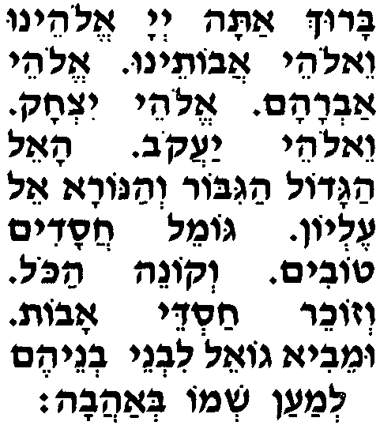
В 10 дней раскаяния добавляют: Зохрэну лехайим мэлэх хафэц бахайим
Помяни нас для жизни, Царь, любящий жизнь, вехотвэну бесафэр ахайим лемаанха Элоим хайим.
и запиши нас в Книгу жизни ради Себя, Б-г жизни.
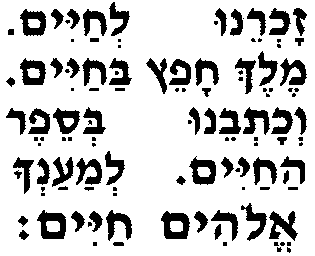
Мэлэх озэр умошиа умагэн.
Царь, помогающий, спасающий и защищающий. Барух Ата А-донай магэн Авраам.
Благословен Ты, Г-сподь, щит Авраама.
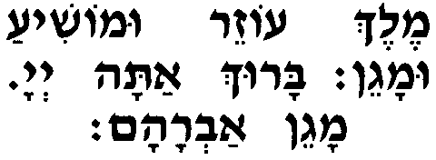
---
Второе благословение: Ата гибор леолам А-донай,
Ты могуч вечно, Г-сподь. мехайэ мэтим Ата рав леошиа
Ты оживляешь мёртвых, велик в спасении,
(летом:) морид аталь
посылающий росу
(зимой:) Машив аруах уморид агэшэм
наводящий ветер и дарующий дождь мехалкэль хайим бехэсэд
питающий живых по милости, мехайэ мэтим берахамим рабим
оживляющий мёртвых по великому милосердию сомэх нофелим верофэ холим
поддерживающий падающих и исцеляющий больных, уматир асурим умкайэм эмунато лишэнэй афар.
освобождающий узников и хранящий Свою верность покоящимся в земле. Ми хамоха бааль гевурот уми домэ лах Мэлэх
Кто как Ты, Могучий, и кто подобен Тебе, Царь, мэмит умхайэ умацмиах йешуа.
Который умерщвляет и оживляет, и взращивает спасение!
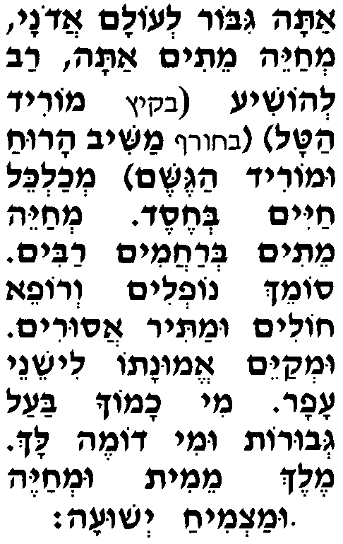
В 10 дней раскаяния добавляют: Ми хамоха Аврахаман
Кто подобен Тебе, милосердный Отец зохэр йецурав лехайим берахамим.
в милосердии вспоминающий Свои творения, чтобы дать им жизнь!
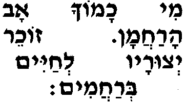
Венээман Ата леахайот мэтим.
Надёжен Ты в обещании оживить мёртвых. Барух Ата А-донай мехайэ амэтим.
Благословен Ты, Г-сподь, оживляющий мёртвых.
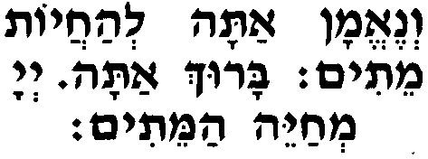
---
Третье благословение:
Утром во время личной молитвы, до повторения её хазаном, здесь читают, начиная со слов "Ата кадош". Но при повторении молитвы хазаном в этом месте все присутствующие громко произносят особое славословие ("Кдуша"):
Накдишах венаарицах кеноам сиах сод сарфэй кодэш амшалешим леха
Воспоём же Твою святость и превознесём Тебя подобно Высшему хору в благозвучных молитвах кедуша какатув аль яд невиэха,
который трижды провозглашает Твою святость, о чём написано рукой Твоего пророка: векара зэ эль зэ веамар:
И взывали они друг к другу и провозглашали:
(община вместе с хазаном:) кадош кадош кадош А-донай цеваот. Мело холь аарэц кеводо.
святой, святой, святой, Г-сподь воинств, вся земля полна Его славы.
(хазан:) Леуматам мешабехим веомерим:
Подобно им, восхваляют и говорят:
(община вместе с хазаном:) барух кевод А-донай мимекомо.
благословенна слава Г-спода от Его места.
(хазан:) Увдиврэй кодшеха катув лэмор:
И в Твоих святых Писаниях написано так:
(община вместе с хазаном:) йимлох А-донай леолам, Элоайих Цийон ледор вадор алелуя.
Г-сподь будет царствовать вечно, - твой Б-г, Сион, во веки веков. Восхвалите Б-га!
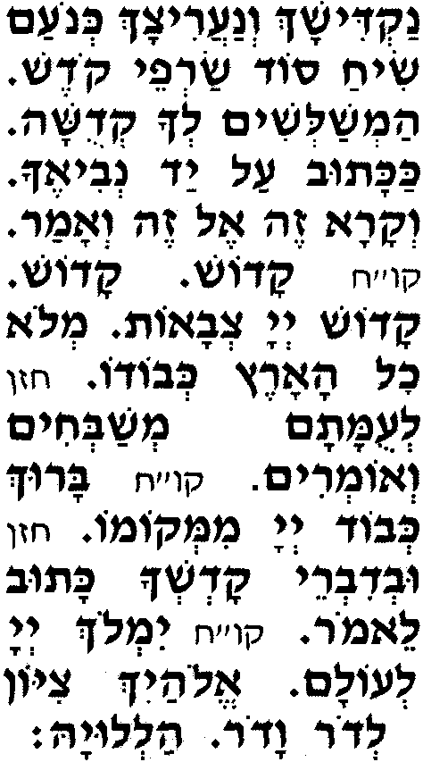
Ата кадош вешимха кадош укдошим бехоль йом йеалелуха сэла,
Ты святой, Твоё Имя свято, и святые будут восхвалять Тебя каждый день, ки Эль Мэлэх гадоль векадош Ата.
потому что Ты, Б-г, - великий и святой Царь. Барух Ата А-донай аЭль акадош.
Благословен Ты, Г-сподь, святой Б-г.
(В 10 дней раскаяния благословение завершают словами:) аМэлэх акадош.
святой Царь.
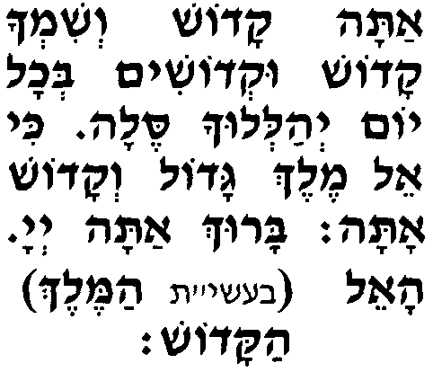
(Если забыл произнести аМэлэх акадош и сразу обратил на это внимание - исправляет ошибку; в противном случае возвращается к началу молитвы.)
---
Четвёртое благословение: Ата хонэн леадам даат
Ты даруешь человеку разумение умламэд леэнош бина.
и обучаешь смертного пониманию.
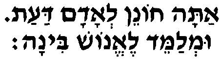
Вечером на исходе субботы или праздника в это благословение вставляют слова:
Ата хонантану лемада Торатэха
Ты одарил нас знанием Своей Торы вателамедэну лаасот хукэй рецонэха,
и научил нас исполнять уставы Своей воли. ватавдель А-донай Элоэну бэн кодэш лехоль,
И отделил Ты, Г-сподь, наш Б-г, святое от будничного, бэн ор лехошэх, бэн Йисраэль лаамим,
свет от тьмы, Израиль от народов, бэн йом ашевии лешэшэт йемэй амаасэ.
седьмой день от шести дней труда. Авину Малкэну ахэль алэну аямим абаим ликратэну лешалом,
Наш Отец, наш Царь! Начни для нас миром дни, что идут нам навстречу хасухим миколь хэт умнуким миколь авон умдубаким бейиратэха.
лишив их всякого греха и очистив от вины, и наполнив их трепетом перед Тобой.
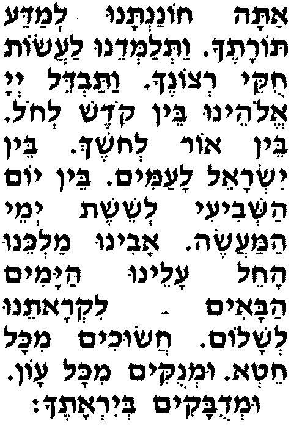
Завершение четвёртого благословения:
(Ве) Хонэну мэитеха хохма бина вадаат.
(И) Даруй же нам от Себя мудрость, понимание и разумение. Барух Ата А-донай хонэн адаат.
Благословен Ты, Г-сподь, дарующий разумение.
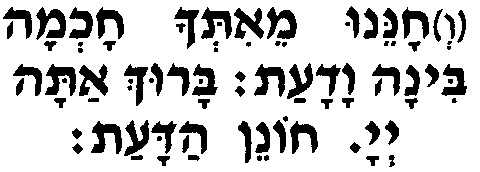
---
Пятое благословение: Ашивэну Авину леТоратэха,
Возврати нас, наш Отец, к Своей Торе. векаревэну Малкэну лааводатэха,
И приблизь нас, наш Царь, к служению Тебе. веахазирэну битшува шелэма лефанэха.
И верни нас, полностью раскаявшихся перед Тобой. Барух Ата А-донай ароцэ битшува.
Благословен Ты, Г-сподь, желающий (наше) раскаяние.
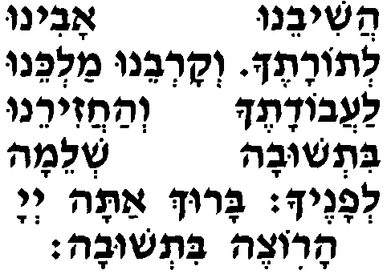
---
Шестое благословение: Селах лану Авину ки хатану,
Прости нас, наш Отец, ибо мы грешили. мехаль лану Малкэну ки фашану,
Помилуй нас, наш Царь, ибо мы преступили. ки Эль тов весалах Ата.
Ведь Ты - Б-г добрый и прощающий. Барух Ата А-донай ханун амарбэ лислоах.
Благословен Ты, Г-сподь, милостивый и всепрощающий.
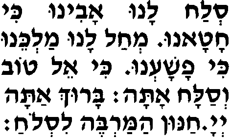
---
Седьмое благословение: Реэ на веоньйэну верива ривэну
Взгляни на нашу беду и заступись за нас. угеалэну геула шелэма меэра лемаан шемэха,
И освободи нас полной свободой в скором времени ки Эль гоэль хазак Ата.
ради Своего Имени, ибо Ты, Б-г, - могучий освободитель. Барух Ата А-донай гоэль Йисраэль.
Благословен Ты, Г-сподь, освободитель Израиля.
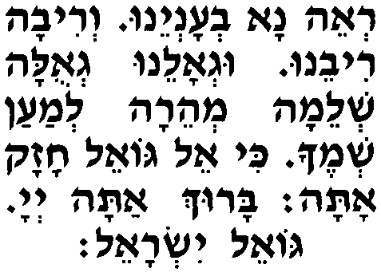
---
Восьмое благословение: Рефаэну А-донай венэрафэ
Лечи нас, Г-сподь, и мы излечимся, ошиэну венивашэа ки теилатэну Ата,
спасай нас, и мы спасёмся, ибо Ты - наше восхваление. веаалэ (аруха умарпэ лехоль тахалуэну улхоль маховэну улхоль макотэну)
И пошли нам (выздоровление и полное излечение от всех наших недугов и болезней) рефуа шелэма лехоль макотэну,
полное излечение всем нашим ранам ки Эль Мэлэх рофэ нээман верахаман Ата.
ибо Ты, Б-г и Царь - верный и милосердный целитель. Барух Ата А-донай рофэ холэй амо Йисраэль.
Благословен Ты, Г-сподь, исцеляющий больных Своего народа, Израиля.
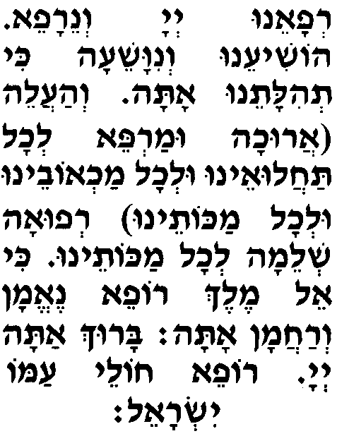
---
Девятое благословение: Барэх алэну А-донай Элоэну
Благослови для нас, Г-сподь, наш Бог, эт ашана азот веэт коль минэй тевуата летова, ветэн
этот год и все виды его урожая на благо и дай
летом: бераха
благословение
зимой: таль уматар ливраха
росу и дождь для благословения аль пенэй аадама весабеэну митува
на землю. И, насытив нас её добром уварэх шенатэну кашаним атовот ливраха
благослови для нас этот год, подобно другим изобильным годам, ки Эль тов умэтив Ата умварэх ашаним.
ибо Ты - добрый Б-г, творящий добро и благословляющий годы. Барух Ата А-донай меварэх ашаним.
Благословен Ты, Г-сподь, благословляющий годы.
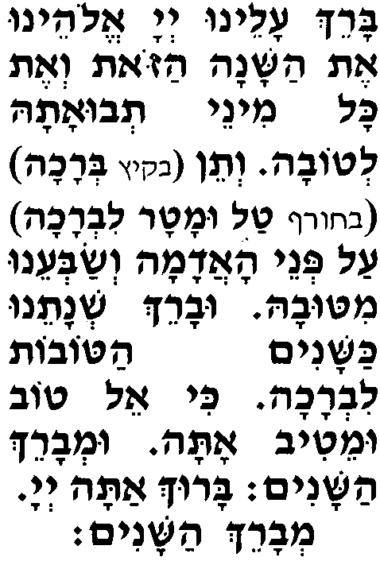
---
Десятое благословение: Тека бешофар гадоль лехэрутэну
Протруби в великий шофар к нашей свободе веса нэс лекабэц галуйотэну векабецэну
и подними знамя, чтобы собрать наших изгнанных. яхад меэра мэарба канфот аарэц леарцэну.
И как можно скорей собери нас воедино с четырёх сторон света в нашу Землю. Барух Ата А-донай мекабэц нидхэй амо Йисраэль.
Благословен Ты, Г-сподь, собирающий разбросанных Своего народа, Израиля.
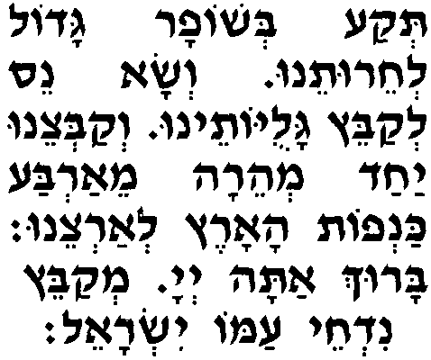
---
Одиннадцатое благословение: Ашива шофетэну кеваришона вейоацэну кеватехила
Возврати наших судей, как прежде, и наших наставников, как раньше. веасэр мимэну ягон ваанаха
Избавь нас от печали и стона. умлох алэну меэра Ата А-донай левадеха бехэсэд уврахамим
И скорее стань нашим единственным Царём, Г-сподь, - с милостью и милосердием. вецадекэну бецэдэк увмишпат.
И по справедливости оправдай нас на суде. Барух Ата А-донай Мэлэх оэв цедака умишпат.
Благословен Ты, Г-сподь, Царь, любящий справедливость и правосудие.
В 10 дней раскаяния говорят: аМэлэх амишпат.
Царь правосудия.
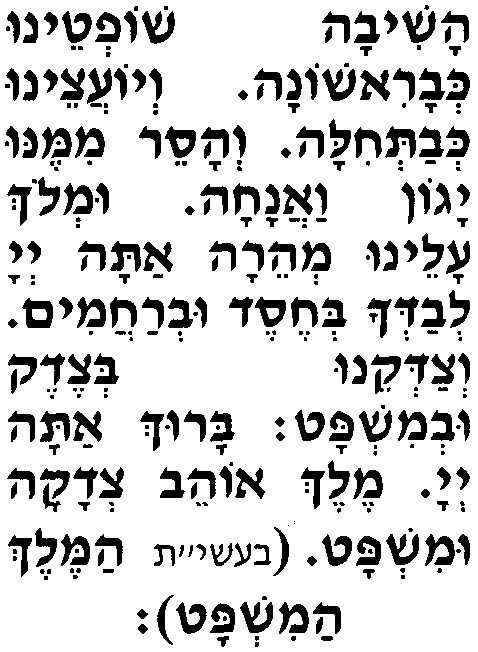
---
Двенадцатое благословение: Веламалшиним аль теи тиква вехоль аминим керэга йовэду,
Да не будет надежды доносчикам, и все вероотступники пусть моментально сгинут вехоль ойевэй амеха меэра йикарэту,
и все враги Твоего народа да будут в скором времени истреблены. веазэдим меэра теакэр утшабэр утмагэр утхалэм уташпилэм ветахниэм бимэра веямэну.
А злодеев скорее искорени, сокруши, смири, прикончи, унизь и покори - в скором времени, в наши дни. Барух Ата А-донай шовэр ойевим умахниа зэдим.
Благословен Ты, Г-сподь, сокрушающий врагов и покоряющий злодеев.
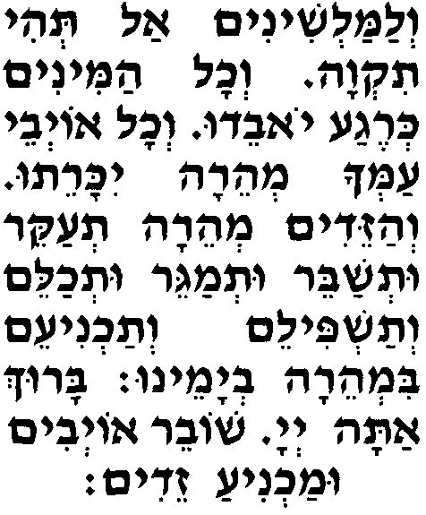
---
Тринадцатое благословение: Аль ацадиким
О праведниках веаль ахасидим
и о благочестивых, веаль зикнэй шеэрит амеха бэт Йисраэль
о старейшинах из остатка Твоего народа, дома Израиля веаль пелэтат бэт соферээм веаль гэрэй ацэдэк
и об уцелевших его мудрецах, о праведных прозелитах веалэну йээму на рахамэха А-донай Элоэну
и о нас - пусть вспомнит Твоё милосердие, Г-сподь, наш Б-г. ветэн сахар тов лехоль аботехим бешимха бээмэт,
И, наградив доброй наградой всех, кто полагается на Твоё истинное Имя, весим хэлкэну имаэм улеолам ло нэвош
установи вместе с ними и нашу долю, чтобы навеки не было нам позора, ки веха батахену веаль хасдеха
ибо мы, положившись на Тебя, агадоль бээмэт увтамим нишанену.
правдиво и искренне опираемся на Твою великую милость. Барух Ата А-донай мишан умивтах лацадиким.
Благословен Ты, Г-сподь, опора и поддержка праведникам.
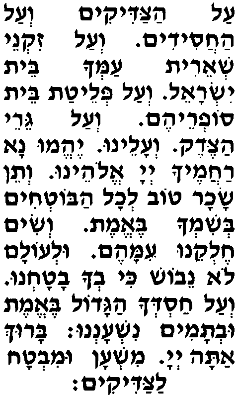
---
Четырнадцатое благословение: Ве-лИрушалайим иреха берахамим ташув ветишкон бетоха каашэр дибарта
И в Иерусалим, Твой город, в милосердии возвратись, и обитай в нём, как обещал. увнэ ота бекаров беямэну биньян олам,
И отстрой его в скором времени, в наши дни, чтобы стоял он вечно. вехисэ Давид авдеха меэра летоха тахин.
И скорей установи в нём престол Твоего слуги Давида. Барух Ата А-донай бонэ Йерушалайим.
Благословен Ты, Г-сподь, возводящий Иерусалим.
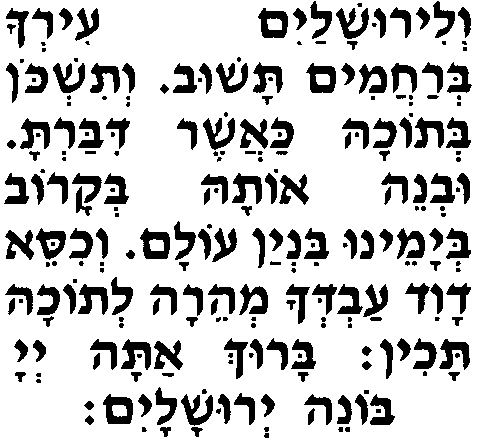
---
Пятнадцатое благословение: Эт цэмах Давид авдеха меэра тацмиах векарно тарум бишуатэха ки лишуатеха кивину коль айом умцапим лишуа.
Росток Давида, Твоего слуги, скорее взрасти и вознеси Своим спасением. Ибо на Твоё спасение - наша ежедневная надежда и чаянье спастись. Барух Ата А-донай мацмиах кэрэн йешуа.
Благословен Ты, Г-сподь, взращивающий спасение.
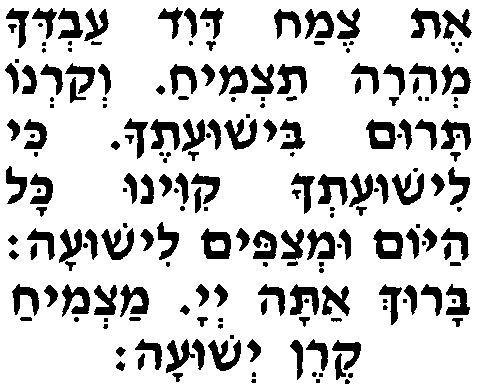
---
Шестнадцатое благословение: Ав арахаман, шема колэну
Милосердный Отец, услышь наш голос. А-донай Элоэну хус верахэм алэну векабэль берахамим уврацон эт тефилатэну,
Г-сподь, наш Б-г, пощади, будь милостив над нами, прими милосердно и благосклонно нашу молитву. ки Эль шомэа тефилот ветахануним Ата умилефанэха Малкэну рэкам аль тешивэну хонэну ваанэну ушма тефилатэну,
Ибо Ты - Б-г, внимающий молитвам и мольбам. Не отпусти нас, наш Царь, от Себя ни с чем. Сжалься над нами и ответь нам, выслушав нашу молитву, ки Ата шомэа тефилат коль пэ амеха Йисраэль берахамим.
ибо Ты милосердно внимаешь молитвам каждого в Твоём народе, Израиле. Барух Ата А-донай шомэа тефила.
Благословен Ты, Г-сподь, внимающий молитве.
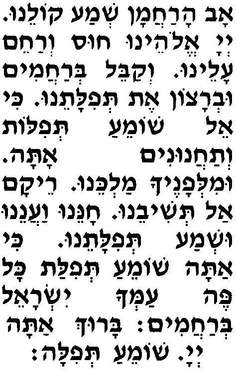
---
Семнадцатое благословение: Рецэ А-донай Элоэну беамеха Йисраэль велитфилатам шеэ, веашэв эт аавода лидвир бетэха,
Благоволи, Г-сподь, наш Б-г, к Своему народу, Израилю, и, снизойдя к его молитве, восстанови службу в Святилище Своего Храма. веишэй Йисраэль утфилатам меэра беаава текабэль берацон, утеи лерацон тамид аводат Йисраэль амэха.
И жертвы, приносимые Израилем, и его молитву скорее прими с любовью и с благоволением. Чтобы было Тебе всегда желанным служение Израиля, Твоего народа.
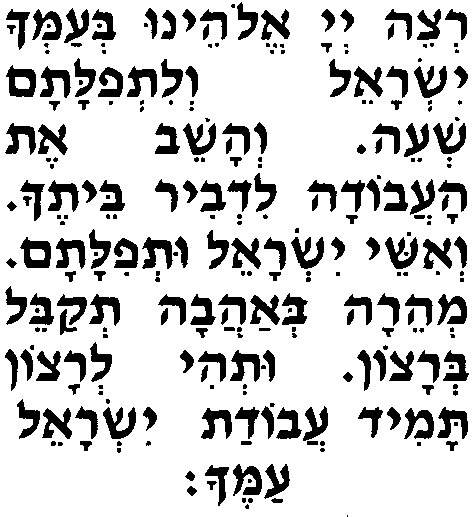
В новомесячье и праздничные будни говорят: Элоэну вЭлоэй авотэну,
Наш Б-г и Б-г наших отцов! яалэ веяво веягиа вейэраэ вейэрацэ вейишама вейипакэдвейизахэр зихронэну уфикдонэну везихрон авотэну везихрон Машиах бэн Давид авдэха везихрон Йерушалайим ир кодешэха везихрон коль амеха бэт Йисраэль лефанэха
Пусть перед Тобой поднимется и придёт, и достигнет, и будет увидена и желанна, и услышана, и замечена, и помянута память о нас и внимание к нам, и память о наших отцах, и память о Машиахе, сыне Давида, Твоего слуги, и память об Иерусалиме, Твоём святом городе, и память обо всём Твоём народе, доме Израиля, лифлэта летова лехэн улхэсэд улрахамим лехайим товим улшалом бейом
- для спасения, добра, благосклонности, милости и милосердия, для доброй жизни и мира в этот день
в новомесячье: рош аходэш азэ.
новомесячья.
в будни Песаха: хаг амацот азэ.
праздника мацы.
в будни Сукот: хаг аСукот азэ.
праздника Сукот.
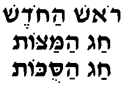
Зохрэну Адонай Элоэну бо летова уфокдэну во ливраха веошиэну во лехайим товим,
Вспомни нас, Г-сподь, наш Б-г, в этот день к добру и отметь нас в этот день благословением, увидвар йешуа верахамим хус вехонэну верахэм алэну веошиэну,
и спаси нас в этот день для доброй жизни. Словом спасения и милосердия сжалься над нами и пощади, смилуйся над нами и спаси, ки элэха энэну ки Эль Мэлэх ханун верахум Ата.
ведь к Тебе устремлены наши глаза, потому что Ты, Б-г, - Царь милосердный и милостивый.
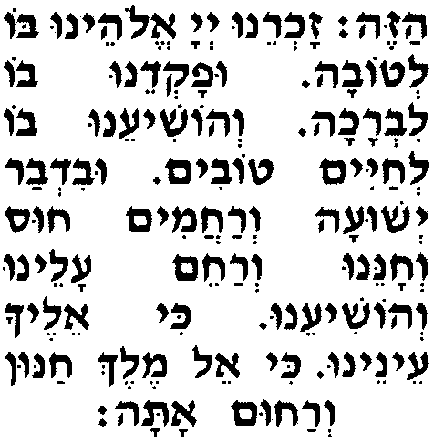
Завершение семнадцатого благословения: Ветэхэзэна энэну бешувеха ле-Цийон берахамим.
И дай нам увидеть своими глазами, как Ты милосердно вернёшься в Сион. Барух Ата А-донай амахазир шехинато ле-Цийон.
Благословен Ты, Г-сподь, возвращающий Свою обитель в Сион.
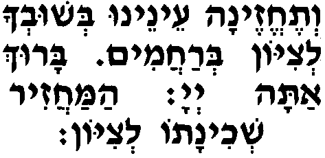
---
Восемнадцатое благословение: Модим анахну лах ша-Ата у А-донай Элоэну вЭлоэй авотэну леолам ваэд,
Благодарим Тебя за то, что Ты, Г-сподь, - наш Б-г и Б-г наших отцов во веки веков, цурэну цур хайэну магэн йишэну, Ата у ледор вадор.
Ты - наш оплот и оплот нашей жизни, щит нашего спасения в каждом поколении. Нодэ леха унсапэр теилатэха аль хайэну амесурим беядэха веаль нишмотэну апекудот лах
Будем благодарить Тебя и провозглашать Тебе хвалу за нашу жизнь, вверенную Тебе, и за наши души, хранимые Тобой, веаль нисэха шэбехоль йом иману веаль нифлеотэха ветовотэха шэбехоль эт эрэв вавокэр вецоорайим атов
и за Твои чудеса, что ежедневно происходят с нами, за Твои знамения и благодеяния, которые происходят во всякое время - вечером, утром и днём. ки ло халу рахамэха веамерахэм ки ло таму хасадэха ки мэолам кивину лах.
Ты всеблаг, ибо Твоё милосердие нескончаемо. Ты милосерден, ибо бесконечна Твоя милость, а наша надежда на Тебя вечна.
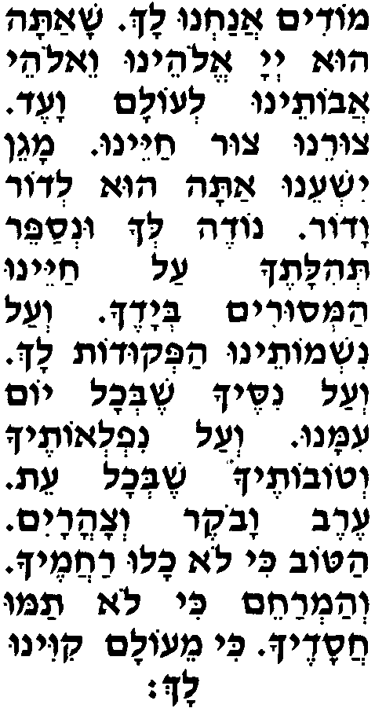
Когда хазан повторяет "модим", община произносит: Модим анахну лах ша-Ата у А-донай Элоэну
Благодарим Тебя за то, что Ты, Г-сподь, - наш Б-г вЭлоэй авотэну Элоэй холь басар йоцерэну йоцэр берэшит,
и Б-г наших отцов, Б-г всего живого, наш Творец, Творец всего сущего. берахот веодаот лешимха агадоль веакадош аль шээхэйитану векиямтану
Благословения и благодарения - Твоему великому и святому Имени за то, что Ты дал нам жизнь и поддерживал нас. кэн техайэну уткайемэну ветээсоф галуйотэну лехацрот кодшэха лишмор хукэха велаасот рецонэха улеовдеха
Так продли же её и сохрани. И собери нас из изгнания во дворах Твоего Святилища, чтобы соблюдали мы Твои законы и исполняли Твою волю, белэвав шалэм аль шэанахну модим лах.
и служили Тебе всем сердцем - за что и благодарим Тебя. Барух Эль аодаот.
Благословен Б-г благодарений!
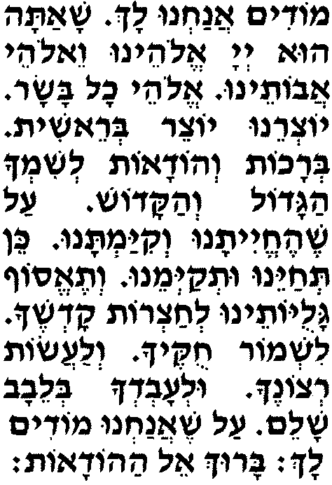
Продолжение восемнадцатого благословения:
В Хануку говорят: Веаль анисим веаль апуркан веаль агевурот веаль атешуот веаль анифлаот
И за чудеса, за избавления, за доблести, за спасения, за удивительные явления, веаль анэхамот веаль амилхамот шэасита лаавотэну баямим аэм баземан азэ.
за утешения, за войны, которые Ты вёл за наших отцов в их дни, в это время. Бимэй Матитьяу бэн Йоханан коэн гадоль Хашмонаи уванав кешэамда малхут Яван
В дни Матитьяу, сына Йоханана, первосвященника, Хашмоная, и его сыновей, когда поднялось злодейское царство Яван (Греция) арешаа аль амеха Йисраэль леашкихам Торатэха улеаавирам мэхукэй рецонэха,
против Твоего народа, Израиля, чтобы заставить его забыть Твою Тору и нарушить законы, установленные по Твоей воле. ве-Ата берахамэха арабим амадта лаэм беэт царатам равта эт ривам данта эт динам накамта
Но Ты, по Своему великому милосердию, заступился за них, когда они оказались в беде, боролся за них, судился за них, мстил за них. эт никматам масарта гиборим беяд халашим верабим беяд меатим утмэим беяд теорим уршаим беяд цадиким везэдим беяд осекэй Торатэха.
Отдал сильных в руки слабых, многочисленных - в руки немногих, нечистых - в руки чистых, злодеев - в руки праведников, злоумышленников - в руки тех, кто занимается Твоей Торой. Улха асита Шэм гадоль векадош беоламэха улеамеха Йисраэль асита тешуа гедола уфуркан кеайом азэ.
И создал Ты Себе великое и святое Имя в Твоём мире, а Своему народу, Израилю, даровал великое спасение и избавление по сей день. Веахар ках бау ванэха лидвир бэтэха уфину эт эхалэха ветиару эт Микдашэха веидлику нэрот бехацрот Кодшэха.
И затем пришли Твои сыновья в Святилище Твоего Храма и убрали Твой Дворец, и очистили Твой Храм, и зажгли светильники во дворах Твоей Святости. Векавеу шемонат (ямим элу беалэль увеодаа веасита имаэм нэс вафэлэ венодэ лешимха агадоль сэла) йемэй Ханука
И установили эти восемь (дней для восхваления и благодарности за то, что сделал Ты им чудо и удивительные явления, так что возблагодарим Твоё великое Имя) дней Хануки, элу леодот улеалэль лешимха агадоль.
чтобы возносить благодарность и хвалу Твоему великому Имени.
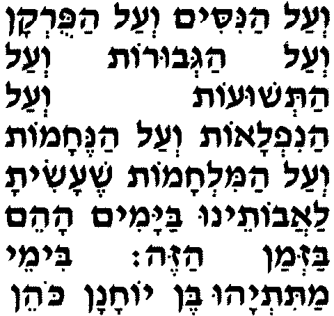 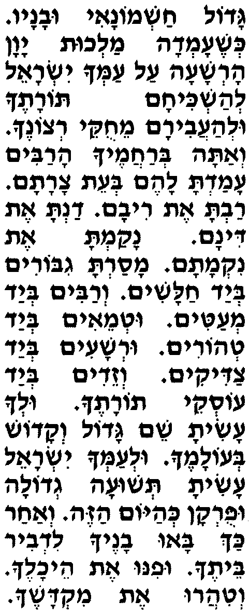 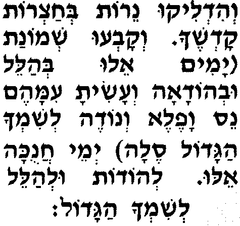
В Пурим говорят: Веаль анисим веаль апуркан веаль агевурот веаль атешуот веаль анифлаот
И за чудеса, за избавления, за доблести, за спасения, за удивительные явления, веаль анэхамот веаль амилхамот шэасита лаавотэну баямим аэм баземан азэ.
за утешения, за войны, которые Ты вёл за наших отцов в их дни, в это время. Бимэй Мордехай ве-Эстэр бе-Шушан абира кешэамад алээм Аман араша бикэш леашмид лаарог улеабэд эт коль айеудим
В дни Мордехая и Эстер в столичном городе Шушан поднялся против них злодей Аман, желая уничтожить, убить и истребить всех иудеев, минаар веад закэн таф венашим бейом эхад бишлоша асар леходэш шенэм асар, у ходэш Адар, улшалам лавоз.
молодых и старых, детей и женщин, в один день - тринадцатого числа двенадцатого месяца, месяца Адар, - а имущество их разграбить. Ве-Ата берахамэха арабим эфарта эт ацато векилкалта эт махашавто ваашэвота ло гемуло верошо веталу ото веэт банав аль аэц.
Но Ты, по Своему великому милосердию, разрушил его намерение и расстроил его замыслы, и обратил их против него самого. И повесили его с сыновьями на виселице.
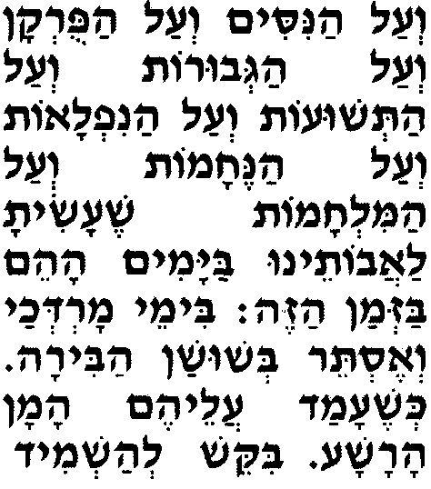
Завершение восемнадцатого благословения: Веаль кулам йитбарэх вейитромэм вейитнасэ Шимха малкэну тамид леолам ваэд.
И за всё это да будет благословлено, возвеличено и превознесено Твоё Имя, наш Царь, всегда, во веки веков.
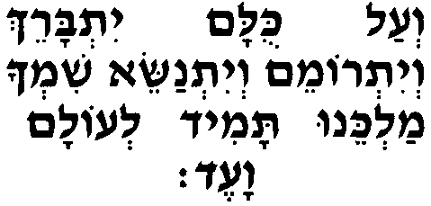
В 10 дней раскаяния добавляют: Ухтов лехайим товим
коль бенэй веритэха.
И запиши для благополучной жизни
всех сынов Своего союза.
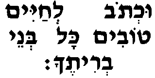
(Если этот отрывок забыл сказать, но вспомнил до завершения благословения, т.е. до слов "Барух Ата", то возвращается и произносит. В противном случае не возвращяется, продолжая молиться дальше.)
Вехоль ахайим йодуха сэла,
И все живущие Тебя возблагодарят, виалелу вивареху эт Шимха агадоль бээмэт леолам ки тов
искренне восславляя и благословляя навеки Твоё великое Имя, как добро, - аЭль йешуатэну веэзратэну сэла аЭль атов.
Б-г нашего спасения и нашей опоры вовеки, добрый Б-г. Барух Ата А-донай атов Шимха улха наэ леодот.
Благословен Ты, Г-сподь, Имя Которому - благо и Которого подобает благодарить.
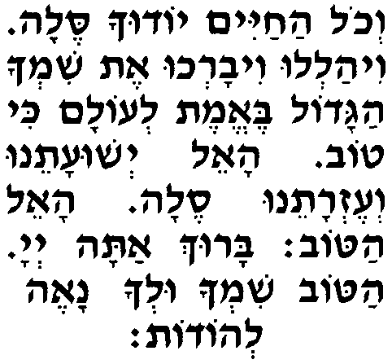
Утром при повторении молитвы "Шмонэ-Эсрэ" хазан, если среди присутствующих нет коаним, читает: Элоэну вЭлоэй авотэну,
Наш Б-г и Б-г наших отцов! барехэну вабераха амешулэшэт ба-Тора
Благослови нас тройным благословением из Торы акетува аль йедэй Моше авдэха аамура мипи Аарон уванав коаним ам кедошэха каамур...
записанным в Торе рукой Моше, Твоего слуги, и произнесённым Аароном и его сыновьями, священниками, Твоим святым народом; как сказано...
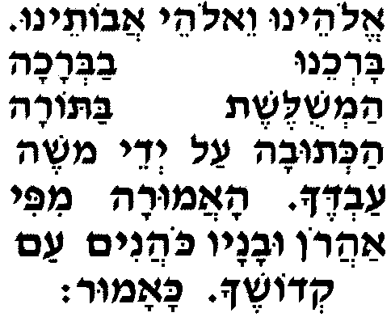 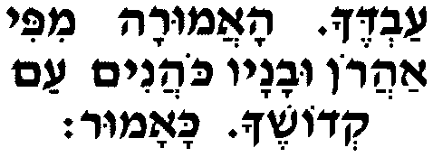
Если нет коаним, чтобы прочесть следующие слова, их читает хазан. После каждого их этих трёх благословений община отвечает "амен".
Йеварэхеха А-донай вейишмерэха.
Да благословит тебя Г-сподь и сохранит! Яэр А-донай панав элэха вихунэка.
Да озарит для тебя Г-сподь Своё лицо и окажет тебе милость! Йиса А-донай панав элэха веясэм леха шалом.
Да обратит Г-сподь к тебе Своё лицо и дарует тебе мир!
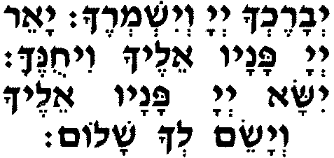
---
Последнее благословение молитвы "Шмонэ-Эсрэ"
Утром, днём, а в некоторых общинах и в вечерней молитве, произносят:
Сим шалом това увраха хайим хэн вахэсэд верахамим алэну веаль коль Йисраэль амэха.
Даруй мир, добро, благословение, жизнь, благосклонность, милость и милосердие нам и всему Твоему народу, Израилю. Барехэну Авину кулану кеэхад (яхад) беор панэха,
Благослови нас, наш Отец, всех как одного, вместе, светом Своего лица, ки веор панэха натата лану А-донай Элоэну Торат хайим веаават хэсэд уцдака увраха верахамим вехайим вешалом,
ибо в свете Своего лица Ты даровал нам, Г-сподь, наш Б-г, Тору жизни, любовь к милости и праведности, благословение, милосердие, жизнь и мир. ветов йийэ беэнэха леварехэну улварэх эт коль амеха Йисраэль бехоль эт увхоль шаа бишломэха беров оз вешалом.
И да будет Тебе угодно Своим миром благословлять нас и благословлять весь Свой народ, Израиль, во все времена и в каждое мгновение, наделив его силой и миром.
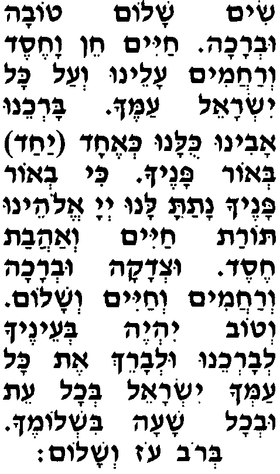
В некоторых общинах в вечерней молитве вместо "Сим Шалом" (Даруй мир) произносят:
Шалом рав аль Йисраэль амеха тасим леолам ки Ата у Мелех Адон лехоль ашалом,
Большой мир даруй Своему народу, Израилю, навечно. Ибо Ты - Владыка всему миру. ветов йийе веанэха леварехэну улварэх эт коль амеха Йисраэль бехоль эт увхоль шаа бишломэха беров оз вешалом.
И да будет Тебе угодно Своим миром благословлять нас и благословлять весь Свой народ, Израиль, во все времена и в каждое мгновение наделив его силой и миром.
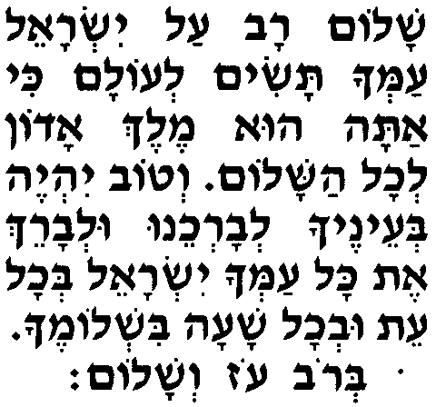
В 10 дней раскаяния добавляют: Бесэфэр хайим бераха вешалом уфарнаса това угзэрот товот йешуот венэхамот
И в книге жизни, благословения, мира, обеспеченности, добрых наставлений, а также спасений и утешений, - низахэр веникатэв лефанэха анахну вехоль амеха бэт Йисраэль лехайим товим улшалом.
да будем мы упомянуты и записаны перед Тобой, мы и весь Твой народ, дом Израиля, - для доброй жизни и мира.
(Если этот отрывок забыл сказать, то нет необходимости возвращаться.)
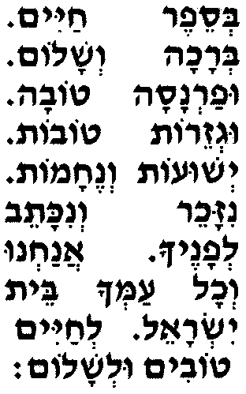
Завершение последнего благословения: Барух Ата А-донай амеварэх эт амо Йисраэль башалом.
Благословен Ты, Г-сподь, благословляющий Свой народ, Израиль, миром.
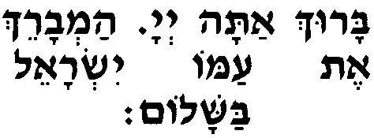
Здесь хазан завершает повторение молитвы "Шмонэ-Эсрэ"
Далее, молящийся про себя (перед тем, как хазан начнёт повторение молитвы) продолжает:
Йийу лерацон имрэй фи веэгейон либи лефанэха А-донай цури вегоали.
Да будут Тебе угодны слова моих уст и помыслы моего сердца, которые перед Тобой, Г-сподь, мой оплот и избавитель.
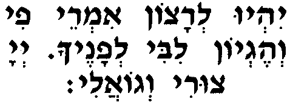
Элоай. Нецор лешони мэра усфатай мидабэр мирма,
Мой Б-г! Убереги мой язык от зла и мои уста от лживых речей. велимкалелай нафши тидом венафши кэафар лаколь тийэ.
Перед теми, кто проклинает меня, моя душа, не шевелись. Перед всеми пусть моя душа будет как прах. Петах либи бе-Торатэха веахарэй мицвотэха тирдоф нафши,
Раскрой моё сердце для Своей Торы, чтобы к Твоим заповедям устремилась моя душа. вехоль акамим веахошевим алай лераа меэра афэр ацатам вакалкэль махашавтам.
А всем, кто поднимается против меня, замышляя недоброе, без промедления разрушь им план и расстрой их замысел. Асэ лемаан шемэха асэ лемаан йеминэха асэ лемаан Торатэха асэ лемаан кедушатэха.
Соверши это ради Своего Имени, ради Своей десницы, ради Своей Торы, ради Своей святости. Лемаан йехалецун йедидэха ошиа йеминеха ваанэни.
Ради того, чтобы были избавлены Твои любимцы, спаси Своей десницей - и ответь мне. Йийу лерацон имрэй фи веэгейон либи лефанэха А-донай цури вегоали.
Да будут Тебе угодны слова моих уст и помыслы моего сердца, которые перед Тобой, Г-сподь, мой оплот и избавитель.
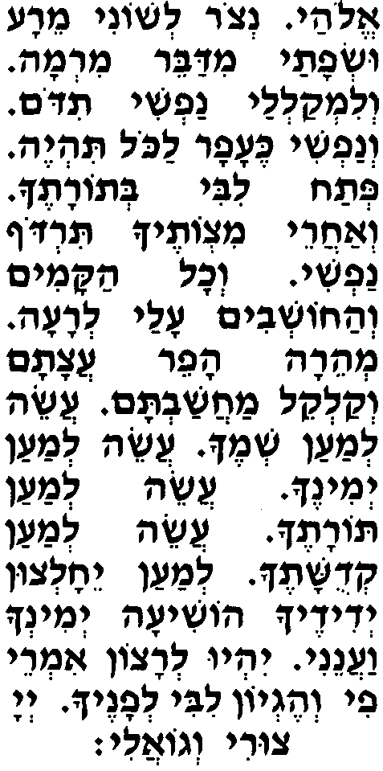
---
После этих слов молящийся отступает на три шага назад и, поклонившись по сторонам и вперёд, произносит:
Осэ шалом (в 10 дней раскаяния произносят ашалом) бимромав у яасэ шалом алэну веаль коль Йисраэль веимру амэн.
Творящий мир в Своих высотах! Да сотворит Он мир нам и всему Израилю. И скажем амэн.
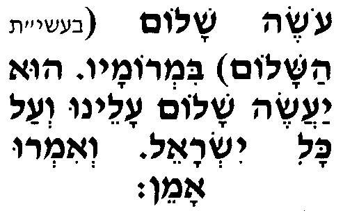
Йеи рацон милефанэха А-донай Элоэну вЭлоэй авотэну шэйибанэ Бэт аМикдаш
Да будет Тебе угодно, Г-сподь, наш Б-г и Б-г наших отцов, чтобы был построен Храм, бимэра веямэну ветэн хэлкэну бе-Торатэха,
вскоре, в наши дни. И дай нам удел в Своей Торе. вешам нааводха бейира кимэй олам ухшаним кадмонийот,
И будем там служить Тебе с благоговейным страхом, как в давние дни и прошедшие годы. веарева лА-донай минхат Йеуда вИрушалаим кимэй олам ухшаним кадмонийот.
И будет приятен Г-споду дар Иудеи и Иерусалима - как в давние дни и прошедшие годы.